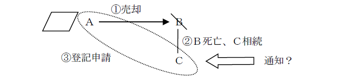
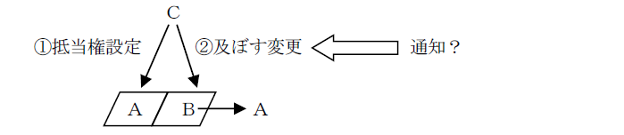

第２編 総 論
第４章 添付情報
本章では、主要な添付情報を取り上げる。
第１節 登記識別情報
1. 通知がなされる場合
申請人自らが登記名義人となる場合に通知される（21条本文）。
法定代理人が代理して登記を申請する場合、当該法定代理人に通知される（不登規62条1項1号）。これに対し、登記の申請について委任を受けた代理人が登記識別情報の通知を受けるためには、特別の委任を受けなければならない（不登規62条2項）。
2. 登記識別情報の通知を要しない場合
(1) 通知を受けるべき者があらかじめ登記識別情報の通知を希望しない旨の申出をした場合（不登規64条1項1号）
登記識別情報を持っていると、紛失・盗難の恐れがあるため、その危険を避けるために、通知を希望しない場合もある。
一の申請情報で複数の不動産の所有権の移転の登記を申請する場合、不動産ごとに登記識別情報の通知を希望するかどうかを選択し、特定の不動産についてのみ通知を希望しない旨の申出をすることができる。
(2) 一定の期間内に登記識別情報を受領しない又はダウンロードしない場合
| 電子申請 | 書面申請 |
| 登記識別情報を送信することが可能になった時から30日以内にダウンロードしない場合（不登規64条1項2号） | 登記完了の時から3か月以内に登記識別情報を記載した書面を受領しない場合（不登規64条1項3号） |
(3) 登記識別情報の通知を受けるべき者が官庁又は公署である場合（不登規64条1項4号）
その後、官公署が登記義務者になる場合であっても、官公署の場合には登記識別情報を通知する必要がないからである。つまり、官公署には登記識別情報の使い道がないわけである。
ただし、当該官庁又は公署があらかじめ登記識別情報の通知を希望する旨の申出をした場合には、登記識別情報が通知される（不登規64条1項4号括弧書）。
3. 通知の有無の具体例
①相続登記において、代位による登記がされたときの代位者に、登記識別情報は通知されるか？また、相続登記において、代位による登記がされたときの被代位者に、登記識別情報は通知されるか？
→ どちらにも通知されない。
②複数の相続人がある場合において、そのうちの1名の申請で相続登記がなされたときの申請人である相続人に、登記識別情報は通知されるか？ また、申請人以外の相続人に、登記識別情報は通知されるか？
→ 申請人である相続人にのみ通知される。
③Ａがその所有不動産をＢに売却したが、その所有権の移転の登記が未了のままＢが死亡し、ＣがＢを相続した場合において、Ａ及びＣが共同して当該登記の申請をし、当該登記が完了したときは、登記識別情報が通知されるか？

→ Ｃに対し、Ｂ名義の登記識別情報が通知される。
④ＡからＢ、ＢからＣへの所有権の移転登記が連件で申請された場合、ＡＢ間の移転についての登記識別情報は通知される。
この申請による登記完了後の登記名義人はＣとなり、Ｂは既に登記名義人ではないことになるが、この場合であっても、Ｃに対してだけでなく、Ｂに対しても登記識別情報は通知される。
⑤一の申請情報により、3筆の土地についていずれもＢ及びＣが登記名義人となる所有権の移転の登記の申請がされ、当該登記が完了した場合には、Ｂ及びＣに対し、何個の登記識別情報が通知されるか？
→ 各3個の登記識別情報が通知される（不登規61条）。
⑥ＡからＢへの所有権移転登記を、ＡからＢＣへの所有権移転登記に更正するときの申請人Ｃに、登記識別情報は通知されるか？
→ 通知される。
⑦ＡからＢへの所有権一部移転登記を、ＡからＢへの所有権移転登記に更正するときの申請人Ｂに、登記識別情報は通知されるか？
→ 通知される。
⑧ＡからＢへの所有権の移転の登記が抹消された場合には、Ａに対し、新たに登記識別情報が通知されるか？
→ 通知されない。
⑨Ａ所有の不動産について、Ｂ所有の要役地のために地役権の設定の登記がされたときのＢに、登記識別情報は通知されるか？
→ 通知されない。地役権者は登記名義人とはならないからである（80条2項）。
⑩不動産の共有者Ａの持分に抵当権の設定の登記がされている場合において、Ａが他の共有者の持分を取得し、単独所有となり、抵当権の効力を所有権全部に及ぼす変更の登記がされたとき、抵当権者Ｃに登記識別情報は通知されるか？

→ 通知されない。
1. 原則
登記権利者及び登記義務者が共同して権利に関する登記の申請をする場合、その他登記名義人が政令で定める登記の申請をする場合には、申請人は、その申請情報と併せて登記義務者の登記識別情報を提供しなければならない（22条本文）。
2. 登記識別情報の提供の方法
| 電子申請（特例方式） | オンラインで登記識別情報を提供する。電子申請又は特例方式の場合には、登記識別情報は書面で提供することは許されず、オンラインで提供しなければならない。 |
| 書面申請 | 登記識別情報を記載した書面を申請書に添付して提出する。 |
3. 具体例
①ＡとＢが共有していた不動産について、共有物分割によるＢ持分全部移転の登記がされたために、Ａの単独所有となった。この後、Ａが不動産を売却するときは、どの登記識別情報を提供するべきか？
甲区2番 所有権移転
原因 平成○年4月1日売買
共有者 持分2分の1 Ａ
2分の1 Ｂ
甲区3番 Ｂ持分全部移転
原因 平成○年10月1日共有物分割
所有者 持分2分の1 Ａ
→ 共有で所有権を取得した際に通知された登記識別情報（甲区2番の登記識別情報）と共有物分割の登記識別情報（甲区3番の登記識別情報）を併せたものである（昭37.11.29民甲3422）。
②同一不動産につき、同一人が数回にわたって持分を取得し、その登記がなされている場合において、取得した持分が登記上特定することができるときは、それぞれの持分につき移転登記をすることができるか？ また、できるとして、当該持分の移転の登記の申請における登記識別情報は、いかなるものか？
甲区2番 所有権一部移転
原因 平成○年4月1日売買
共有者 持分2分の1 Ａ
甲区3番 Ｂ持分全部移転
原因 平成○年10月1日売買
所有者 持分2分の1 Ａ
→ できる（昭58.4.4民3.2252）。その際の登記識別情報は、特定した持分の取得の際の登記識別情報のみで足りる。甲区2番で登記された持分を譲渡するときは、甲区2番で登記された持分を譲り受けたときに通知された登記識別情報のみで足りる。なお、この場合の登記の目的は、「所有権一部（順位2番で登記した持分）移転」となる。
③破産管財人が破産者所有の不動産を任意売却した場合における所有権の移転の登記の申請情報には、登記義務者である破産者の登記識別情報を提供することを要するか？
→ 裁判所の許可を得たことを証する情報を提供すれば、登記義務者である破産者の登記識別情報を提供することを要しない（昭34.5.12民甲929、平16.12.16民2.3554）。
④相続財産清算人が、権限外行為について家庭裁判所の許可を得たことを証する情報を提供して、相続財産である不動産につき、相続財産法人を登記義務者とする所有権の移転の登記を申請する場合には、登記義務者の登記識別情報の提供を要するか？
→ 要しない（登研606P.199）。
⑤地方公共団体が登記権利者として、登記を嘱託する場合には、登記義務者の登記識別情報の提供は必要ない（昭33.5.1民甲893）が、地方公共団体が買主と共同して申請するときは、登記義務者の登記識別情報の提供を要するか？
→ 要しない（昭42.4.6民3.150）。
⑥合筆後の土地について所有権の登記名義人の権利に関する登記識別情報は、合筆による所有権の登記の登記識別情報であるが、合筆後の土地に設定する抵当権の登記を申請する場合に、合筆前の土地の所有権の登記の登記識別情報の全部が提供されれば、登記の申請が合筆後の土地の所有権の登記名義人の真意に出たものであることが形式的に確認され虚偽の登記を防止できるため、申請は却下されない（昭39.7.30民甲2702）。
1. 登記識別情報についての失効の申出
登記名義人又はその相続人その他の一般承継人は、登記官に対し、通知を受けた登記識別情報について失効の申出をすることができる（不登規65条1項）。
登記識別情報を紛失した場合や、盗み見られた可能性がある場合には（登記識別情報はパスワードであるため、番号さえわかれば盗まれたのと同様の効果がある）、第三者に登記名義人になりすまされる可能性があるため、失効の申出をするべきである。
2. 登記識別情報に関する証明
登記名義人又はその相続人その他の一般承継人は、登記官に対し、手数料を納付して、登記識別情報が有効であることの証明その他の登記識別情報に関する証明を請求することができる（不登令22条1項）。
登記識別情報の提供の要否
| 失効の申出 | 不要 |
| 有効証明請求 | 必要（不登規68条2項） |
3. 印鑑証明書の添付
申出情報を記載した書面を登記所に提出する方法により失効の申出をする場合及び有効証明請求情報を記載した書面を提出する方法により有効証明請求をする場合には、申出又は請求の書面に押印した印鑑証明書を添付しなければならないのが原則である。
もっとも、以下の場合には、印鑑証明書の添付は不要となる（不登規65条11項、68条12項、不登令16条2項）。
①法人の代表者又は代理人が記名押印した者である場合において、その会社法人等番号を申請情報の内容としたとき（不登規48条1号）
②申出又は請求の書面について公証人又はこれに準ずる者の認証を受けた場合（不登規48条2号）
③裁判所によって選任された者がその職務上行う申出又は請求の書面に押印した印鑑に関する証明書であって、裁判所書記官が最高裁判所規則で定めるところにより作成したものが添付されている場合（不登規48条3号）
登記識別情報を提供できない場合というのは、主に以下の3つの場合がある（不登準則42条1項）。
①失念……登記識別情報通知書の原本を紛失したなど、登記識別情報がわからなくなってしまった場合。
②不通知…不動産登記法21条ただし書の規定により、申請人があらかじめ登記識別情報の通知を希望しない旨の申出をした場合や、債権者代位権に基づいて登記がされたために、申請人自らは登記名義人にならない場合（21条本文参照）など。
③失効……登記名義人又はその相続人その他の一般承継人が、登記官に対して、失効の申出をした場合（不登規65条）。
登記識別情報（登記済証）を提供できない場合に登記をするには、1.事前通知、2.資格者代理人による本人確認、3.公証人の認証による本人確認の3つの方法がある。
1. 事前通知
(1) 意義
登記申請において、登記識別情報の提供をすべきときに、登記識別情報の提供がない場合には、原則として、事前通知手続により本人確認をする（23条1項前段）。そして、登記官は、事前通知に対する登記義務者からの申出がなければ、登記をすることができない（23条1項後段）。
しかし、資格者代理人による本人確認情報の提供又は公証人による本人確認の認証がなされ、登記官がその内容を相当と認めるときは、事前通知を省略できる（23条4項）。
なお、事前通知制度を利用して登記を申請する場合でも、受付はその申請時である。申出がされた時ではない。登記の申請は、本来、その申請がされた時点で受付をして順位を確保するのが原則であり、登記識別情報の提供がない申請の場合であっても、登記の申請がされたことに変わりはなく、本人確認手続が異なるだけなので、申請時に順位を確保するという原則を変更する理由はないと考えられたからである。
(2) 事前通知書の送付
事前通知書の送付先及び送付方法は、次のようになっている。
(a) 事前通知書の送付先
①登記義務者の住所
②所有権に関する登記申請をする場合において、登記義務者の住所について変更の登記がされているときは、法務省令で定める場合（※1）を除き登記義務者の登記記録上の前の住所（23条2項）（※2）
→ 登記義務者（所有権登記名義人）の住所について虚偽の変更登記がされて、所有権登記名義人の知らない間に不動産の名義が第三者に移転してしまうことを防止するためである。
※1登記申請の日が登記義務者の住所についてされた最後の変更の登記申請の受付の日から3か月を経過している場合（不登規71条2項2号）には、前住所への通知は不要である。
※2登記義務者が法人である場合には、前の住所地への通知はなされない（不登規71条2項3号）。
(b) 事前通知書の送付方法
事前通知は、登記申請がオンラインで行われた場合でも書面の送付による（オンラインですることはできない）。事前通知をオンラインの方法でしてしまっては、なりすましが容易であり、本人確認にならないからである。
①登記義務者が自然人の場合（不登規70条1項1号）
日本郵便株式会社の内国郵便約款の定めるところにより名宛人本人に限り交付し若しくは配達する本人限定受取郵便又はこれに準ずる方法（以下、「本人限定受取郵便」という。）による。
②登記義務者が法人の場合
申請人の希望があれば、代表者個人の住所に送付することができ（不登規70条1項1号、不登準則43条2項ただし書）、この場合には本人限定受取郵便による。
法人の主たる事務所に送付するときは、書留郵便又は信書便の役務であって信書便事業者において引受け及び配達の記録を行う方法による（不登規70条1項2号、不登準則43条2項本文）。
③外国に住所を有する場合（不登規70条1項3号）
書留郵便若しくは信書便の役務であって信書便事業者において引受け及び配達の記録を行うもの又はこれらに準ずる方法による。
(3) 事前通知に対する申出
(a) 事前通知に対する申出方法
事前通知に対する申出方法は、登記の申請を電子申請によって行ったか、書面申請によって行ったかによって異なる。
| 電子申請 | 書面申請 | |
| 事前通知に対する申出方法 | 登記所に送信する方法（不登規70条5項1号） | 登記所に提出する方法（不登規70条5項2号） |
なお、事前通知を受けた者が、申請が事実であるか否かの申出をする前に死亡した場合は、その相続人全員から当該申出をする必要がある（不登準則46条1項）。
(b) 事前通知に対する申出の期間（不登規70条8項）
ⅰ 原則
登記所が通知を発送した日から2週間以内
ⅱ 例外
登記義務者が外国に住所を有する場合には、登記所が通知を発送した日から4週間以内
(c) 前の住所地への通知をした場合に異議の申出があったとき
前の住所地への通知をした場合において、登記の完了前に、異議の申出があったときは、登記官による本人確認調査が行われる（平17.2.25民2.457、不登準則33条1項4号、24条1項）。
2. 資格者代理人による本人確認情報の提供
(1) 意義
登記義務者が登記識別情報を提供することができない場合、登記申請の代理の依頼を受けた司法書士（又は弁護士）は、当該登記義務者が真実の権利を有している者であることの証明をすることができ、「本人確認情報」という書面を作成し（申請書に添付し、添付情報欄に「本人確認情報」と記載する）、その書面から登記官は登記義務者の本人確認をすることができる。そして、登記官が本人確認情報の内容を相当と認めるときには、事前通知は不要となる（23条4項1号）。
(2) 「本人確認情報」の内容
登記官が、申請人が申請の権限を有する登記名義人であることを確認するために必要な情報として、面談した日時やどのような本人確認書類によって本人確認をしたか（ex.免許証）などを記載する必要がある。
3. 公証人による認証
申請情報（本人申請の場合）又は代理権限証明情報（代理人申請の場合）に、登記義務者に間違いないという公証人の認証を受け、登記官がその内容を相当と認めるときは、事前通知は不要となる（23条4項2号）。
公証人は、私署証書につき当事者が公証人の面前で署名又は記名捺印をしたときは、当該私署証書につき認証することができるため（公証人法58条）、この公証人の認証がある申請情報又は委任状については、本人が作成したものであるということが公に証明されるからである。